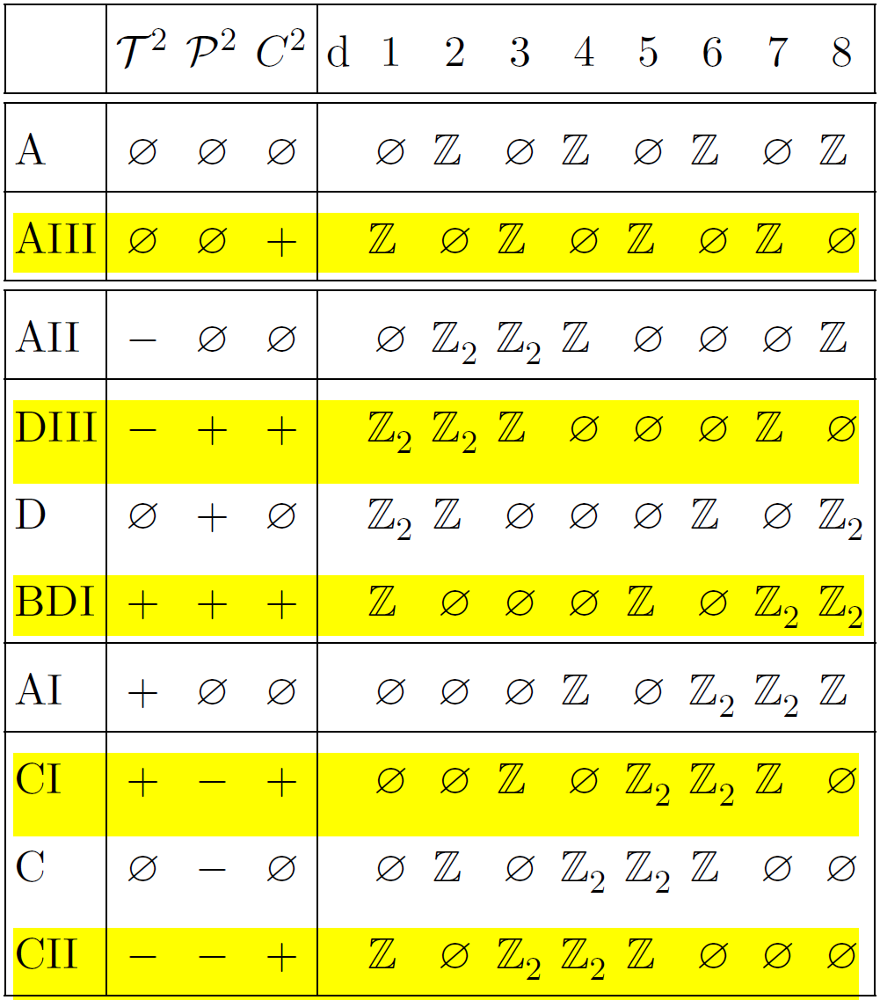

Ten-fold classification table of free fermions

If have \(\mathcal{C}\) then must have both \(\mathcal{T}\) and \(\mathcal{P}\) or neigher of them.
A and AIII: complex class with no antiunitary symmetry. Have period 2. Can get constraints on
\(\mathcal{Q}(\mathbf{k})\).
others: real classes with at least one antiunitary symmetry. Have period 8.
AIII: \(C^{(s)}=0\) for all dimensions, and \(W^{(s)}=0\) for even dimensions.
Symmetries
\(\mathcal{T}\) time reversal symmetry (antiunitary)
$$\mathcal{T} e^{-itH} \mathcal{T}^{-1} = H$$
\(\mathcal{P}\) charge conjugation or particle hole symmetry (antiunitary)
$$ \mathcal{P}(-ieA)\mathcal{P}^{-1} = ieA$$
In superconductors, \(\mathcal{P}\) emerges due to a redundancy in the description of
Bogoliubov de Gennes form.
\(\mathcal{C}=\mathcal{T}\mathcal{P}\) chiral symmetry (unitary).
In chiral symmetry basis, the chiral symmetry operator
$$ \mathcal{C} =
\begin{pmatrix}
\mathbb{I}_n & 0 \\
0 & -\mathbb{I}_n
\end{pmatrix} $$
The flattened band Hamiltonian is
$$ \mathcal{Q}(\mathbf{k}) =
\begin{pmatrix}
0 & q(\mathbf{k}) \\
q^{\dagger}(\mathbf{k}) & 0
\end{pmatrix} $$
with unitary \(q(\mathbf{k})\)
For single-particle Hamiltonian \( \mathcal{H}_{\alpha\beta} \) defined by
\(H=c^{\dagger}_{\alpha}\mathcal{H}_{\alpha\beta} c_{\beta} \) (e.g. Bloch Hamiltonian)
$$\mathcal{T}\mathcal{H}(\mathbf{k})\mathcal{T}^{-1} = \mathcal{H}^*(-\mathbf{k}) $$
$$\mathcal{P}\mathcal{H}(\mathbf{k})\mathcal{P}^{-1} = -\mathcal{H}^*(-\mathbf{k}) $$
$$\mathcal{C}\mathcal{H}\mathcal{C}^{-1} = -\mathcal{H} $$
Flatband Hamiltonian (no symmetry imposed)
$$ \mathcal{Q}(\mathbf{k}) = U(\mathbf{k})
\begin{pmatrix}
\mathbb{I}_m & 0 \\
0 & -\mathbb{I}_n
\end{pmatrix}
U^{\dagger}(\mathbf{k})$$
where
$$ \mathcal{H}(\mathbf{k}) = U(\mathbf{k})
\begin{pmatrix}
\mathbb{E}_m^{+}(\mathbf{k}) & 0 \\
0 & \mathbb{E}_n^{-}(\mathbf{k})
\end{pmatrix}
U^{\dagger}(\mathbf{k})$$
The group of topologically distinct Hamiltonians \(H\) is given by the homotopy group
$$\pi_d(C_0),\quad C_0=\frac{U(m+n)}{U(m)\times U(n)}$$
e.g. \(\pi_2(C_0)=\mathbb{Z}\) as in integer quantum Hall
e.g. \(\pi_3(C_0)=\mathbb{Z}_1\) as topologically trivial fermions in 3D space
e.g. \(\pi_3(C_1)=\mathbb{Z}\) as with chiral symmetry only
Topological invariants Berry curvature \(F\) (trace is gauge invariant) and Berry connection \(A\)
$$ F = F_{ij}(\mathbf{k}) \;\mathrm{d}k_i \wedge \mathrm{d} k_j$$
$$ F_{ij}(\mathbf{k}) = \partial_i A_j(\mathbf{k}) - \partial_j A_i(\mathbf{k})
+ [A_i(\mathbf{k}),A_j(\mathbf{k})]$$
$$ A = A_{i}(\mathbf{k}) \;\mathrm{d}k_i $$
$$ A_{j}^{(ab)}(\mathbf{k}) = i \sum_{\alpha} U^{\dagger}_{a\alpha}(\mathbf{k}) \partial_j U_{\alpha b}(\mathbf{k})
\;\;\mathrm{lattice} $$
$$ A_{j}(\mathbf{k}) = i \langle\psi(\mathbf{k})| \partial_j |\psi(\mathbf{k})\rangle \;\;\mathrm{continuous} $$
Here \(j\) is dimension index and \(\partial_j=\partial/\partial k_j\). Chen number without chiral symmetry and \(d=2s\)
$$ 2C^{(s)} = \frac{1}{s!}\left(\frac{i}{2\pi}\right)^s \int_{\mathrm{BZ}} \mathrm{tr}\left[F^s\right]$$
$$\begin{split}
C^{(s)}=&\frac{(-1)^s s!}{2(2s+1)!}\left(\frac{i}{2\pi}\right)^{s+1} \epsilon_{i_1\dots i_d} \\
&\times\int_{\mathrm{BZ}} \mathrm{d}^d\mathbf{k} \;\mathrm{tr}\left[ \mathcal{Q}\partial_{i_1}\mathcal{Q}
\dots \partial_{i_d}\mathcal{Q}\right]
\end{split}$$
winding number with chiral symmetry \(d=2s+1\)
$$\begin{split}
W^{(s)}=&\frac{(-1)^s s!}{2(2s+1)!}\left(\frac{i}{2\pi}\right)^{s+1} \epsilon_{i_1\dots i_d} \\
&\times\int_{\mathrm{BZ}} \mathrm{d}^d\mathbf{k} \;\mathrm{tr}\left[ \mathcal{C} \mathcal{Q}\partial_{i_1}\mathcal{Q}
\dots \partial_{i_d}\mathcal{Q}\right]
\end{split}$$
$$\begin{split}
W^{(s)}=&\frac{(-1)^s s!}{(2s+1)!}\left(\frac{i}{2\pi}\right)^{s+1} \epsilon_{i_1\dots i_d} \\
&\times\int_{\mathrm{BZ}} \mathrm{d}^d\mathbf{k} \;\mathrm{tr}\left[q^{\dagger}\partial_{i_1}q\partial_{i_2}q^{\dagger}\dots
\partial_{i_d}q\right]
\end{split}$$
Here \(\mathcal{Q}=\mathcal{Q}(\mathbf{k})\) and \(q=q(\mathbf{k})\). winding number and electric polarization are related whenever a chiral symmetry is present.